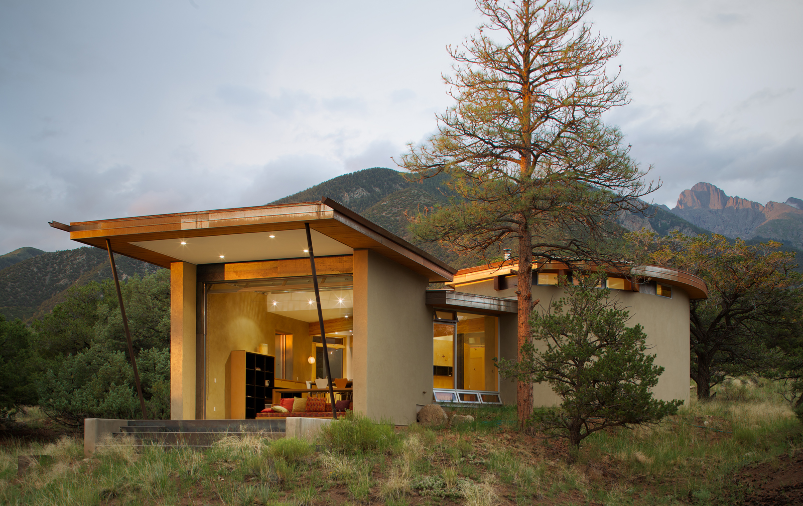

Straw-bale construction is a building method that uses bales of straw (commonly wheat, rice, rye and oats straw) as structural elements, building insulation, or both. This construction method is commonly used in natural building or "brown" construction projects. Research has shown that straw-bale construction is a sustainable method for building, from the standpoint of both materials and energy needed for heating and cooling.
To build a stable straw bale house you need to complete the following steps.